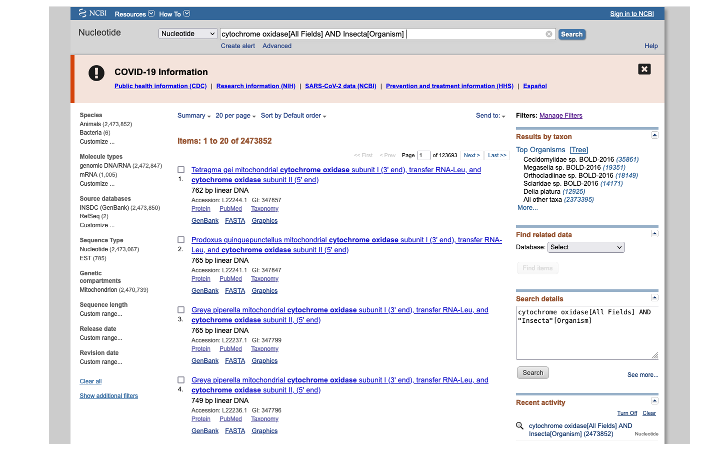
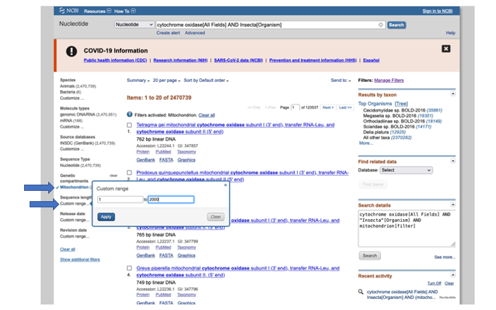
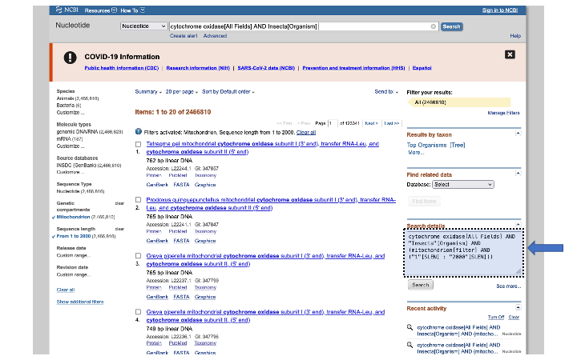
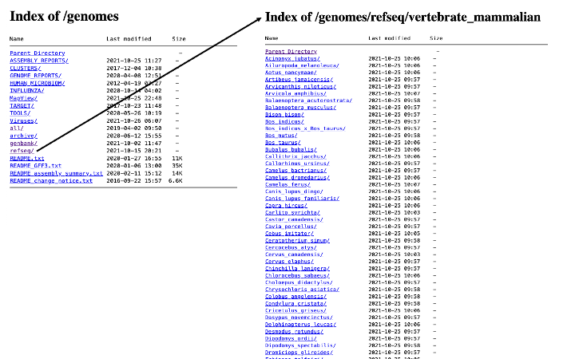
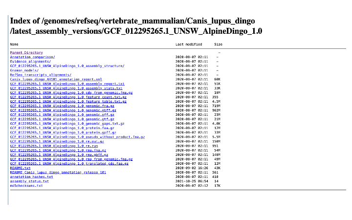
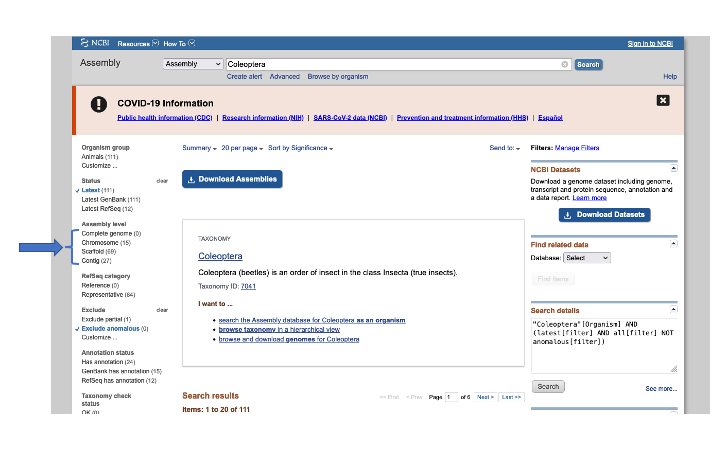
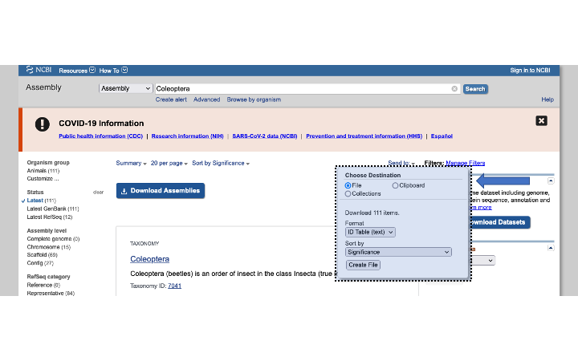
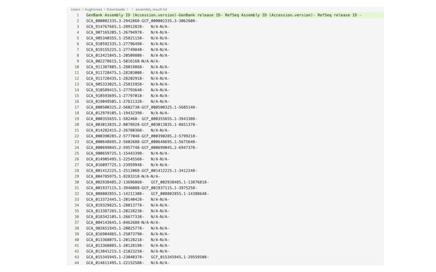
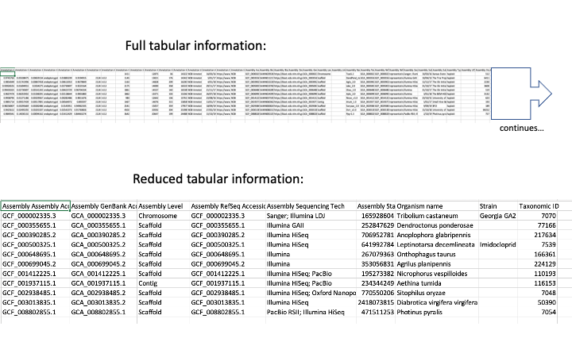

Written and presented by Hugh Cross
This week we are going to go over some of the ways that you can access data on the NCBI webpage. One of the most common types of search on NCBI is Nucleotide. Go to the NCBI webpage and select Nucleotide from the drop down menu. Then we will enter the search terms cytochrome oxidase gene and the organism Insecta. In the brackets we enter [All Fields] after cytochrome oxidase, which will look in any field for the term; for Insecta we enter [Organism], which will return any match at the class Insecta rank and below.
cytochrome oxidase[All Fields] AND Insecta[Organism]

Hit enter and you will see the search returns 2,473,852 matches. In the search result page that appears, you can modify the results. Here we select Mitochondrion to limit the results to genes within that organelle, and also select a size range, to avoid downloading whole mitogenome and genome assemblies.

In the search details on the right side of the page, you can see how you would enter those terms in the search bar above (or for other command line programs that do searches, like Entrez).

For many of the data fields on NCBI, there are no standard names. In the case of a gene like cytochrome oxidase, it may be named differently, depending on the researcher that submitted it. For these cases, you can enter multiple search terms using the OR flag:
cytochrome c oxidase subunit 1[Title] OR cytochrome c oxidase subunit I[Title] OR cytochrome oxidase subunit 1[Title] OR cytochrome oxidase subunit I[Title] OR COX1[Title] OR CO1[Title] OR COI[Title] AND Insecta[Organism] AND (mitochondrion[filter] AND ("1"[SLEN] : "3000"[SLEN]))
(The above also includes our earlier modifiers.)
When you have a set of sequences that you would like to download, you can either select individual ones by selecting the box next to the name, or select all by clicking on Send to: and then under Choose Destination select File; under Format choose either GenBank or Fasta (you can also just get a list of the files).
If you would like to download complete (or near complete) mitochondrial genomes, there are (at least) two ways to do this. There is a webpage on NCBI that contains a single file with 7,819 mitogenomes in it. These are limited to curated and annotated reference mitogenomes. The annotations can also be downloaded from this page:
NCBI page for reference mitogenomes
As you might guess, there are heaps more mitogenomes that are not included in the above reference file. To access these, we can go back to the Nucleotide search bar and enter terms to help find them for a particular group of organisms. In the below example we are looking for beetle mitogenomes:
"Coleoptera"[Organism] AND (mitochondrion[filter] AND ("10000"[SLEN] : "40000"[SLEN]))
Note that the length range is set to pull in only very long sequences, and avoid partial mitochondrial or single gene mitochondrial sequences.
As above, you can add keywords to avoid unverified mitogenomes
"Coleoptera"[Organism] AND ("complete"[Title] AND mitochondrion[filter] AND ("10000"[SLEN] : "40000"[SLEN]))
or
"Coleoptera"[Organism] AND (mitochondrion[filter] AND ("10000"[SLEN] : "40000"[SLEN]) NOT unverified[Title])
For any of the above searches, it is also worth considering some of the following modifiers, which can help weed out unwanted sequences.
AND mitochondrion[Filter]
NOT environmental sample[Title]
NOT environmental samples[Title]
NOT environmental[Title] -
NOT uncultured[Title]
NOT unclassified[Title]
NOT unidentified[Title]
NOT unverified[Title]
AND is_nuccore[filter]
For obtaining whole genome sequences, along with associated protein and annotation information, there are a couple of ways to go. You could go direct to the FTP download site:
https://ftp.ncbi.nlm.nih.gov/genomes/
And from there you can navigate your way to the genome of your choice:

When you get to the organism of your choice, there are usually multiple files to choose from:

There are in general two main sets of genome files: refseq and genbank. Of these, refseq are always annotated and considered the reference for that organism. Genbank genomes can be annotated, but not always.
You can also use the search bar, as we did above for Nucleotide searches, to search for genomes. For accessing the actual sequences, it is better to choose the Assembly search from the dropdown menu. This will give you access to the actual genome files. You can further modify this search as above by selecting terms; the most common is to filter by level of completeness (e.g. Complete, Chromosome, Scaffold, or Contig):

Using the Genome search tool will give you summary information about each taxon, which will require more pointing and clicking to get to a single genome. With the Assembly search tool, you can either click on the blue Download Assemblies button, or get a list of the genome accessions by selecting on Send to: button:

The Send to action will download a tabular file called assembly_result.txt of genome accessions for both genbank and refseq. I often use this table to make a list of accessions to download with another tool such as NCBI Datasets (described below). Here is an example assembly_result file:

To get a list of just Genbank accessions from this file:
grep -v 'GenBank' assembly_result.txt | cut -f 1 > gb_accession_list.txt
To get just the refseq files (if there are any)
grep -v 'GenBank' assembly_result.txt | grep -v 'N/A' | cut -f 3 > ref_accession_list.txt
To get refseq accession, or if there isn’t a refseq, get genbank instead:
cat assembly_result.txt | while read line;
do
genbank=$(echo "${line}" | cut -f 1)
refseq=$(echo "${line}" | cut -f 3)
if [[ "${refseq}" = 'N/A' ]]
then echo $genbank >> genomes_to_download.txt
elif [[ "${refseq}" = 'RefSeq Assembly ID (Accession.version)' ]]
then echo 'starting'
else echo $refseq >> genomes_to_download.txt
fi
done
NCBI has produced a new command line tool called Datasets to make downloading data easier. It is still in ‘beta’ mode, but seems to work for the most part. There is an online manual with many examples, but below we will show how to download a genome or list of genomes.
To download a single genome by accession number:
datasets download genome accession GCF_000500325.1
For larger genomes, they recommend to download the summary information first, so you can look it over. The tool will by default download the protein sequences and annotation files as well (though you can turn this off), so will be a large download. Use with caution.
To download the dehydrated version (just summary tables), from a file with a list of accessions
datasets download genome accession --inputfile genomes_to_download.txt --dehydrated
You can use the related tool Dataformat to make the summary information easier to read
Unzip the downloaded file first
unzip ncbi_dataset.zip -d genome_folder
(the -d parameter changes the name of the zip file.)
Then use dataformat to convert the json formatted report to a tab-delimited file:
dataformat tsv genome \
--inputfile genome_folder/ncbi_dataset/data/assembly_data_report.jsonl \
> ./genome_assembly_data_report.tsv
The resulting table has loads of information. You can use some command line tools to get just the interesting bits:
cut -f 18,22,23,27,29,44,57,59,60 genome_assembly_data_report.tsv > genome_summary.tsv
I picked out those columns that seemed to give the most interesting information. You can go through the full table (easiest in Excel) to find the most useful to you.

If you have decided to download all the genomes, you can rehydrate (what else?).
datasets rehydrate --directory genome_folder/
See the online manual for more options